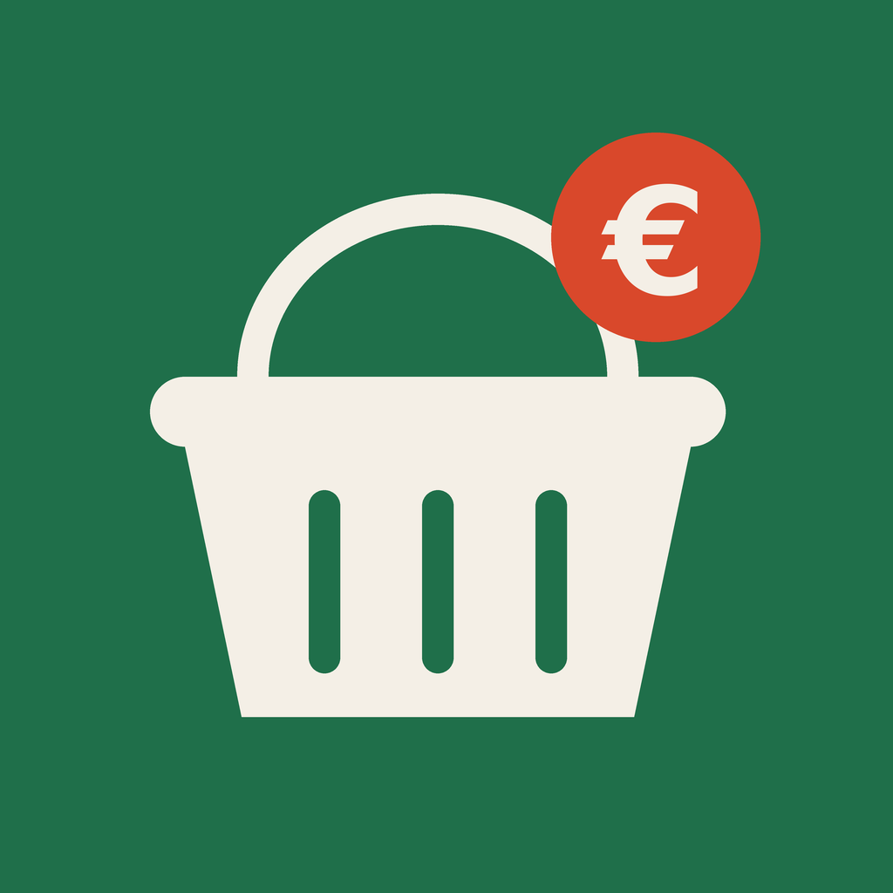

Пазарко / Pazarko
Политика за поверителност
В сила от 10 октомври 2026 г. Актуализирана на 6 ноември 2026 г. (администратор, анонимна статистика).
Мобилното приложение „Пазарко“ („приложението“) се предоставя от „Бизнес Ноутс“ ЕООД („ние“), което е и администратор на данните по тази политика. Тази политика обяснява какви данни обработва приложението.
Какви данни събираме
Приложението не изисква регистрация, не използва вход с акаунт и не събира име, имейл, телефон, местоположение, контакти или снимки. Не съдържа реклама и не ви проследява в други приложения и сайтове. Единственото, което може да изпраща, е анонимна статистика — и то само ако се съгласите (вижте по-долу).
Анонимна статистика (само с ваше съгласие)
При първо стартиране приложението пита дали може да събира анонимна статистика за използването. Ако откажете, не се изпраща нищо. Можете да промените избора си по всяко време в Настройки → Поверителност → Анонимна статистика.
Ако се съгласите, изпращаме:
- случаен идентификатор на инсталацията (създава се на телефона, не е свързан с ваше име, акаунт или рекламен идентификатор и се изтрива, когато изключите статистиката);
- версия на приложението, операционна система и език;
- избрания град и датата на цените;
- действия в приложението: отворени екрани, добавени групи продукти и марки, избрани готови кошници, промени в настройките, изключени вериги, както и обобщение на изчислената кошница (брой продукти, вериги в плана, сума и спестяване).
Не изпращаме местоположение (нито GPS, нито адрес), имена на конкретни магазини от „Моите магазини“ или данни, по които да ви идентифицираме. Използваме статистиката, за да подобряваме приложението и за обобщени анонимни отчети (например кои групи продукти и вериги се търсят най-често) — никога на ниво отделен потребител.
Основание: вашето съгласие (чл. 6, ал. 1, б. „а“ от ОРЗД), което можете да оттеглите по всяко време. Обработващ: PostHog Inc. (posthog.com) — сървърите са в Европейския съюз; услугата е настроена да не съхранява IP адреси и да не определя местоположение по IP. Данните се пазят до 12 месеца.
Данни, които остават на устройството ви
- избраният град, продуктите в кошницата и настройките (език, промоции, изключени вериги);
- временно копие (кеш) на цените, за да работи приложението и без интернет.
Тези данни се съхраняват само локално на вашето устройство, не се изпращат към нас и се изтриват, когато изтриете приложението. (Изключение е обобщението за анонимната статистика по-горе — само ако сте се съгласили.)
Местоположение
Ако изберете „Близо до → Моето местоположение“, приложението ще поиска разрешение за местоположение. То се използва само на вашия телефон, за да намери най-близките магазини, и не се изпраща към нас или към трети страни. Можете да откажете и вместо това да изберете квартал или конкретни магазини.
Изтегляне на цени
За да покаже актуални цени, приложението изтегля публични файлове с цени от нашия сървър (GitHub Pages, услуга на GitHub, Inc.). Както всеки уеб сървър, хостинг доставчикът може да записва технически данни за заявката (например IP адрес и тип устройство) за целите на сигурността и работата на услугата. Ние не използваме тези данни, за да ви идентифицираме. Вижте декларацията за поверителност на GitHub.
Източник на цените
Цените идват от отворените данни на Комисията за защита на потребителите (kolkostruva.bg). Те са информативни: цената в конкретен магазин може да се различава. Приложението не е свързано с КЗП или с търговските вериги.
Карти и адреси
Местоположенията на магазините са определени по техните адреси с помощта на OpenStreetMap (© участници в OpenStreetMap, лиценз ODbL).
Деца
Приложението не е предназначено за деца и не събира съзнателно данни от тях.
Промени
При промяна на тази политика ще публикуваме новата версия на тази страница с нова дата.
Вашите права
Имате право на достъп, коригиране, изтриване и ограничаване на обработването, право да оттеглите съгласието си и право на жалба до Комисията за защита на личните данни (cpdp.bg). Тъй като статистиката е анонимна, за да изтрием данните на конкретна инсталация, е достатъчно да изключите статистиката в настройките — идентификаторът се изтрива и новите данни вече не могат да бъдат свързани със старите.
Контакт
„Бизнес Ноутс“ ЕООД · diginetgroup@gmail.com
Privacy Policy
Effective 10 October 2026. Updated 6 November 2026 (controller, anonymous statistics).
The “Pazarko” mobile app (“the app”) is provided by Business Notes EOOD (“we”), which is also the data controller under this policy. This policy explains what data the app handles.
What we collect
The app has no sign-up or login and does not collect your name, email, phone number, location, contacts or photos. It contains no advertising and does not track you across other apps or websites. The only thing it may send is anonymous usage statistics — and only if you agree (see below).
Anonymous statistics (only with your consent)
On first launch the app asks whether it may collect anonymous usage statistics. If you decline, nothing is sent. You can change your choice at any time in Settings → Privacy → Anonymous statistics.
If you agree, we send:
- a random installation identifier (created on your phone, not linked to your name, any account or advertising identifier, and deleted when you turn statistics off);
- app version, operating system and language;
- the selected city and the price date;
- in-app actions: screens opened, product groups and brands added, ready-made baskets chosen, settings changed, chains excluded, and a summary of the calculated basket (number of items, chains in the plan, total and savings).
We never send your location (neither GPS nor address), the specific stores in “My stores”, or anything that identifies you. We use the statistics to improve the app and for aggregated, anonymous reports (for example, which product groups and chains people look for most) — never at the level of an individual user.
Legal basis: your consent (Art. 6(1)(a) GDPR), which you may withdraw at any time. Processor: PostHog Inc. (posthog.com), with servers in the European Union; the service is configured not to store IP addresses or derive location from them. Data is kept for up to 12 months.
Data kept on your device
- your selected city, the products in your basket and your settings (language, promotions, excluded chains);
- a temporary copy (cache) of prices so the app works offline.
This data is stored only locally on your device, is never sent to us, and is deleted when you uninstall the app. (The exception is the summary for anonymous statistics above — only if you have agreed.)
Location
If you choose “Near → My location”, the app asks for location permission. Your location is used only on your phone to find the nearest stores and is never sent to us or any third party. You can decline and pick a neighbourhood or specific stores instead.
Downloading prices
To show current prices, the app downloads public price files from our server (GitHub Pages, a service of GitHub, Inc.). Like any web server, the hosting provider may log technical request data (such as IP address and device type) for security and operation of the service. We do not use this data to identify you. See the GitHub Privacy Statement.
Price source
Prices come from the open data of Bulgaria’s Consumer Protection Commission (kolkostruva.bg). They are for information only: the price in a specific store may differ. The app is not affiliated with the Commission or any retail chain.
Maps and addresses
Store locations are derived from their addresses using OpenStreetMap (© OpenStreetMap contributors, ODbL licence).
Children
The app is not intended for children and does not knowingly collect data from them.
Changes
If this policy changes, we will publish the new version on this page with a new date.
Your rights
You have the right to access, rectify, erase and restrict processing, to withdraw consent and to lodge a complaint with the Bulgarian Commission for Personal Data Protection (cpdp.bg). Because the statistics are anonymous, turning statistics off in Settings deletes the identifier, so new data can no longer be linked to earlier data.
Contact
Business Notes EOOD · diginetgroup@gmail.com